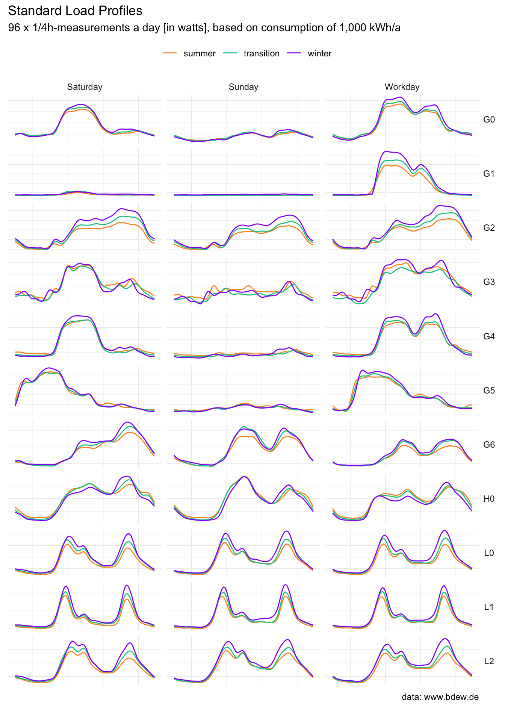
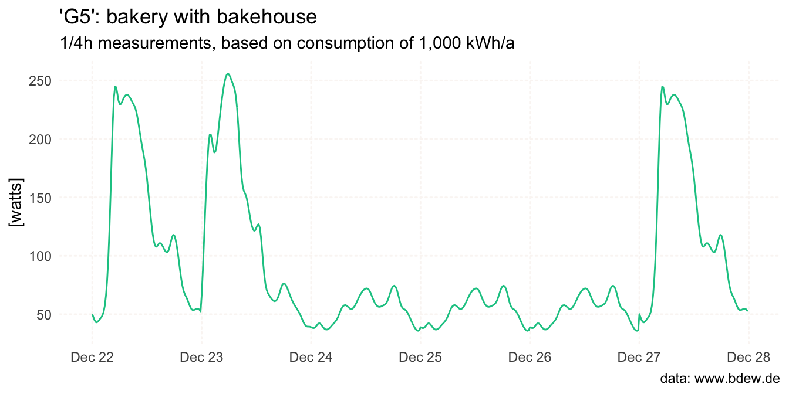

This package provides data on representative, standard load profiles for electricity from the German Association of Energy and Water Industries (BDEW Bundesverband der Energie- und Wasserwirtschaft e.V.) in a tidy format.

Installation
To install the development version of standardlastprofile from GitHub, call:
# install.packages("devtools")
devtools::install_github("flrd/standardlastprofile")
#> Skipping install of 'standardlastprofile' from a github remote, the SHA1 (a5229a4c) has not changed since last install.
#> Use `force = TRUE` to force installationWhat will you get
The following dataset and functions are implemented:
-
slp– Dataset for BDEW Standard Load Profiles in Electricity -
slp_generate– Generate a standard load profile, normalized to an annual consumption of 1,000 kWh -
slp_info– Information and Examples of BDEW Standard Load Profiles
About the data
The standardlastprofile package contains one dataset called slp. In total there are 9,504 observations of 5 variables:
-
profile_id: identifier of standard load profile -
period: one of “summer”, “winter”, “transition” -
day: one of “saturday”, “sunday”, “workday” -
timestamp: format “%H:%M” -
watts: electric power
str(slp)
#> 'data.frame': 9504 obs. of 5 variables:
#> $ profile_id: chr "H0" "H0" "H0" "H0" ...
#> $ period : chr "winter" "winter" "winter" "winter" ...
#> $ day : chr "saturday" "saturday" "saturday" "saturday" ...
#> $ timestamp : chr "00:00" "00:15" "00:30" "00:45" ...
#> $ watts : num 70.8 68.2 65.9 63.3 59.5 55 50.5 46.6 43.9 42.3 ...In the context of the German electricity market, the term ‘Standard Load Profile’ denotes a representative pattern of electricity consumption over a specific period. These profiles portray anticipated electricity consumption for diverse customer groups, like households or businesses. While not an exact match for an individual customer’s consumption profile, they serve as a valid approximation for larger groups of similar customers.
For each unique combination of profile_id, period and day there are 96 x 1/4 hour measurements in watts. If H0 keeps you puzzled, you are not alone:
-
H0: households (German: “Haushalte”) -
G0toG6: commerce (“Gewerbe”) -
L0toL2: agriculture (“Landwirtschaft”)
For more details, call the slp_info() function.
slp_info(language = "EN")$H0
#> $profile
#> [1] "H0"
#>
#> $description
#> [1] "household"
#>
#> $details
#> [1] "This profile includes all households with exclusively and predominantly private consumption. Households with predominantly private electrical consumption, i.e. also with minor commercial consumption are e.g. sales representatives, home workers, etc. with an office in the household. The Household profile is not applicable for special applications such as storage heaters or heat pumps."Generate a standard load profile
Generate a standard load profile for a user-defined period of time using the slp_generate() function:
G5 <- slp_generate(
profile_id = "G5",
start_date = "2023-12-22",
end_date = "2023-12-27"
)
head(G5)
#> profile_id start_time end_time watts
#> 1 G5 2023-12-22 00:00:00 2023-12-22 00:15:00 50.1
#> 2 G5 2023-12-22 00:15:00 2023-12-22 00:30:00 47.4
#> 3 G5 2023-12-22 00:30:00 2023-12-22 00:45:00 44.9
#> 4 G5 2023-12-22 00:45:00 2023-12-22 01:00:00 43.3
#> 5 G5 2023-12-22 01:00:00 2023-12-22 01:15:00 43.0
#> 6 G5 2023-12-22 01:15:00 2023-12-22 01:30:00 43.8
See vignette("algorithm-step-by-step", package = "standardlastprofile") for a detailed explanation of the algorithm.
Source
Data and information about the methodology can be found on website of the BDEW: https://www.bdew.de/energie/standardlastprofile-strom/
Code of Conduct
Please note that this project is released with a Contributor Code of Conduct. By participating in this project you agree to abide by its terms.